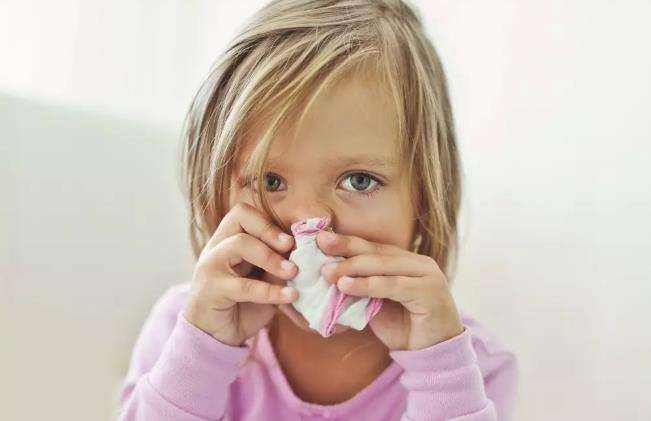

可能很多人心理都会有这么一个疑问：狐臭不痛不痒，为什么还要治疗?是啊，为什么呢?带着疑问询问了知名的狐臭专家，听完我的疑问笑了笑，从儿童角度列举了以下儿童狐臭的五点危害：
1. 损害孩子身体健康
狐臭患者不仅汗多，而且异味重，容易导致各种细菌滋长及其它各种皮肤疾病，而且其难闻的刺鼻味也使人不悦，严重影响患者朋友正常的生活、学习和交际。
2.致使孩子病情加重

狐臭不会自己痊愈，如果不治疗，狐臭就会慢慢加重，使身边的人老远都能闻到狐臭味，然后就会越来越难治疗，所以我院医生建议家长朋友在发现孩子患上狐臭之后一定要及早治疗。
3.影响孩子心理健康
儿童患上狐臭之后，肯定会对患者的心理健康发育造成影响。这个并不难理解，一则孩子发现自己与别人不一样总会害怕小伙伴排斥他，二则社会上对狐臭不了解的人还是占大多数，甚至有一些人会歧视狐臭患者。这些都会损伤患儿的自尊心，对于其健康发育是非常不利的。
4.影响患儿以后的就业
通过对多家大型企业的调查发现，很多公司通过体检拒绝狐臭患者进入公司，特别是服务业。碍于舆论的压力，虽然很多公司并没有明确表示，但是也有很多大公司公开拒绝狐臭患者应聘岗位，这也是狐臭的重大危害。
况且狐臭的危害不仅仅只有这五种，但仅仅这五种危害已经让小编觉得狐臭这种病不治不行。以前医学还不发达的时候，我们对它无可奈何，但现在，已经不用再受它的控制了。